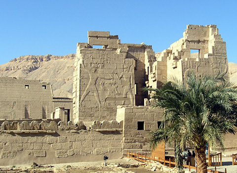
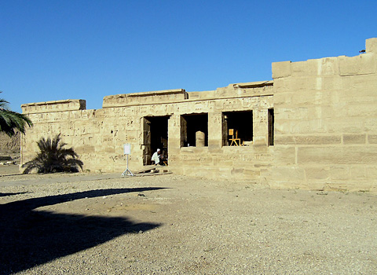
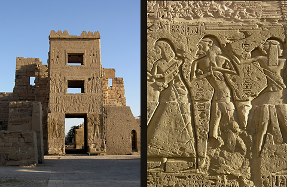

Temple of Ramses III
The Temple of Rameses III at Medinet Habu is a huge complex of stone and mudbrick ramparts on the West Bank of the Nile at Luxor. Situated at the southern end of the Theban necropolis, its massive walls and towers are often overlooked by the tourists who pass close by on their way to the Valleys of the Kings and Queens. This is a pity because it was once a place of great importance, not only as the mortuary temple of Rameses III during Dynasty XX but as an earlier place of worship as well as a fortress and administrative centre for Thebes which spanned several dynasties.


In the north-east corner of the temple grounds is the small temple which is a mixture of both the earliest and latest construction at Medinet Habu. This temple was already present when Rameses III began work at the site in the Dynasty XX. It was begun by Hatshepsut in the mid-Dynasty XVIII and extended by her successor Tuthmosis III. The small temple can be entered from the Roman court which juts out from the eastern side of the main gateway, or from the main temple grounds to the south. Beneath the foundations of Hatshepsut’s temple archaeologists have found traces of an even older construction that dates back to the early Dynasty XVIII and to the Middle Kingdom, and the rites performed here were probably very ancient, so it is not surprising that they survived long after Rameses III’s mortuary cult had disappeared. Texts suggest that Amun was worshipped in association with the group of eight primeval creation gods known as the Ogdoad, as well as in his earlier form of Kematef (a serpent creator deity) also known as ‘The Ba of Osiris’, said like the Ogdoad to be buried at the Mound of Djeme.
The oldest part of the small temple is centred around the three shrines at the rear of the structure, dedicated to Amun, Mut and Khons. This cult temple was used for the weekly (a week was 10 days) Amun festivals of regeneration. Hatshepsut’s sanctuary was named ‘Holiest of Places’. Restoration and epigraphy of the three inner shrines is still being carried out by Chicago House and is not yet published, but it appears that three separate forms and statues of Amun were kept here. Restorations by Pinudjem I and Euergetes and alterations by Ptolemy X and others right through to the Emperor Antonius Pious, indicate the importance and prolonged activity of the temple, long after the Rameses III temple had fallen into disuse probably at the end of his dynasty. Leaving the small temple by the southern entrance we are faced with the First Pylon of the temple of Rameses III called, “The Mansion of Millions of Years of King Rameses III, United with Eternity in the Estate of Amun”. The south tower is higher and better preserved than the north tower and is dominated by a giant relief of the king, wearing the white crown of Upper Egypt, smiting enemy captives before the gods Amun and Ptah. On the northern side the king is before Amun-Re-Horakhty. The god is presenting Rameses with the curved sword, symbolising strength in battle and beneath them are rows of small bound figures representing Egypt’s conquered enemies. The lower part of these captives are depicted with an oval shield containing their names or nationality, although this is not an accurate representation of the state of the empire in the reign of Rameses III, and includes Nubian and Asiatic names borrowed from earlier conquests of Tuthmosis III and Rameses II. In the inscribed texts above the reliefs the gods promise to strike terror into the king’s enemies and to invoke the help of other warrior deities in his defence. Isis and Nekhbet to the south and Nephthys and Wadjet to the north stand guard over the processional way into the temple in the flagpole recesses. There is a staircase to the balcony above the main doorway and the towers would have been ideal points for observing the night sky. Going through the entrance in the first pylon, originally an immense wooden door, we enter the first court, an open space enclosed by four walls. This was the forecourt of the temple and also of the adjoining palace. The columned portico of the palace building to the south is echoed on its northern side by seven huge pillars, each supporting a colossal Osirid statue of Rameses III wearing a plumed atef crown. At the king’s sides are small unidentified figures of a prince and princess.